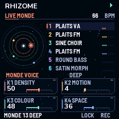
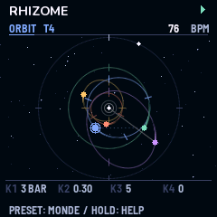
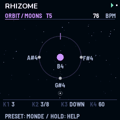
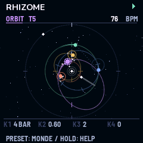
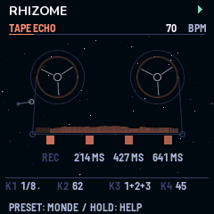
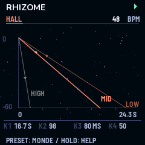
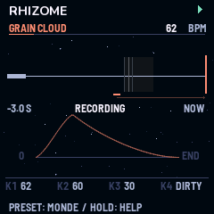

When Day Chokes The Night
Des corps tournent autour d'une étoile et jouent quand ils passent leurs portes. L'espace et le temps, sur un petit synthé.
Un firmware pour le M-VAVE FM-1, écrit pour le projet ambient When Day Chokes The Night. Il fait l'espace et le temps :
30 Mondes en neuf familles : DUSK, NIGHT et DAWN, du crépuscule à l'aube ; DEEP, des formes longues ; ECHO, la bande et la HALL au premier plan ; VOICE, les voix de Rhizome ; RAGA, MAQAM et EAST, les gammes du monde : les ragas des heures, les modes arabes et persans avec leurs quarts de ton, le gamelan, la Thaïlande et le Japon.
Il est le compagnon de Monades, le firmware de l'autre FM-1 du projet, qui fait les notes et le rythme. Il joue aussi très bien seul.
Un séquenceur pas à pas fait tourner une boucle de pas, et certains pas jouent. Ici, la boucle est une orbite, et chaque piste est un corps qui en fait le tour autour d'une étoile. Il joue quand il passe une de ses portes.
Le firmware complet, le même code que sur le FM-1, compilé pour le navigateur. Rien ne joue avant d'appuyer sur « Allumer ». Pour commencer : PRESET sur un Monde, SEQ pour la page ORBIT, K3 pour donner des portes à une piste, puis PLAY. Voir le mode d'emploi.







Sur le FM-1, les 30 Mondes restent entre 60 et 77 % du processeur au plus fort, sans aucun décrochage. La limite que le firmware s'impose est 85 %.
Kid Bunka / Christoph Link (Mutable Dreams), Émilie Gillet / Mutable Instruments (Plaits, Rings, Elements, Clouds, stmlib), Charles Vestal (fm1-base), Leo Kuroshita (Felucca). Monades et Rhizome : Dr-John-8bits.
Licence GPL-3.0 ; notices MIT, MPL-2.0 et des polices conservées. Projet indépendant, sans lien avec Mutable Instruments, M-VAVE ni l'auteur de Mutable Dreams.